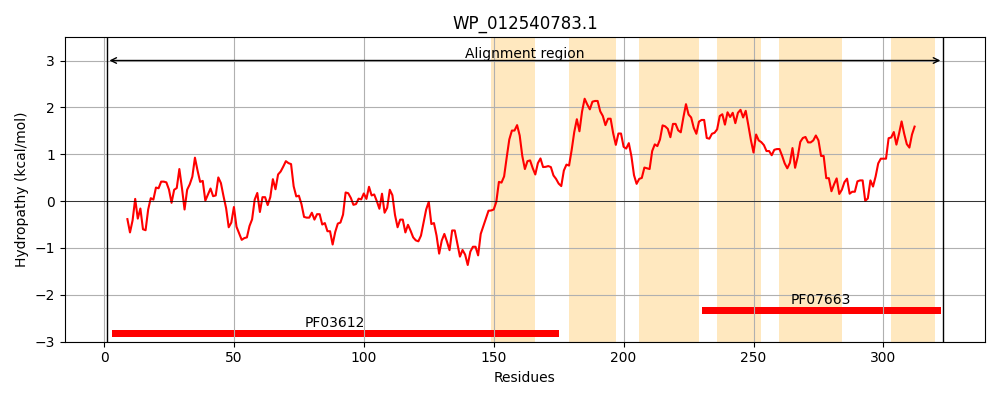
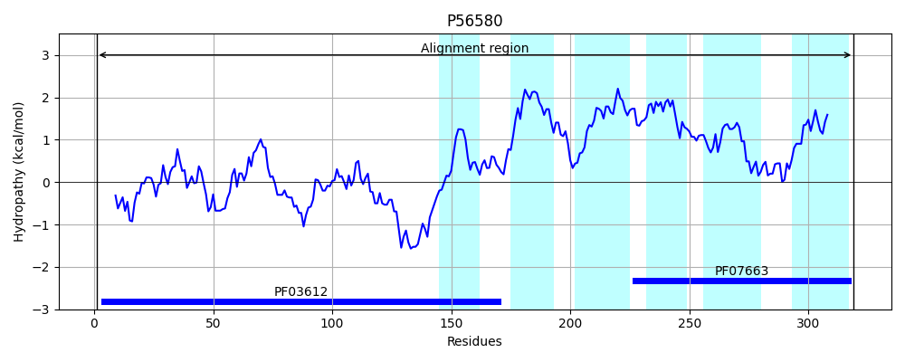
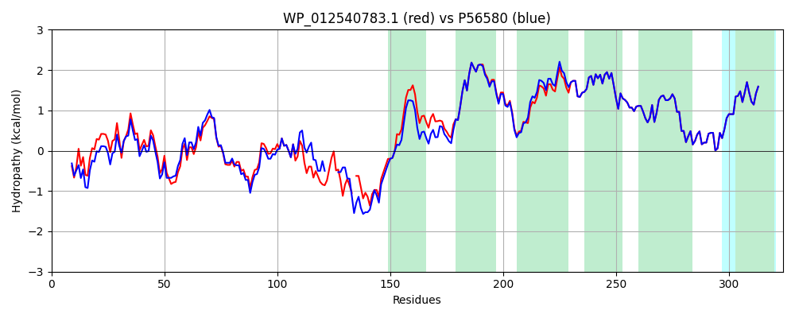

Hit Accession: P56580
Hit TCID: 4.A.4.1.1
Hit Description: gnl|BL_ORD_ID|11014 gnl|TC-DB|P56580|4.A.4.1.1 PTS SYSTEM, GLUCITOL/SORBITOL-SPECIFIC IIBC COMPONENT (EIIBC-GUT) (GLUCITOL/SORBITOL-PERMEASE IIBC COMPONENT) (PHOSPHOTRANSFERASE ENZYME II, BC COMPONENT) (EC 2.7.1.69) (EII-GUT) - Escherichia coli.
Mach Len: 324
e:0.000000
Query TMS Count : 6
Hit TMS Count: 6
TMS-Overlap Score: 4.950000
Predicted Substrates:CHEBI:30911;glucitol
BLAST Alignment:
Score: 1483 , Bit scores: 575 bits, E-value: 0.0e+00, Alignment length: 324, Percentage identity: 90
Query: 1 MTRIRIEKGTGGWGGPLELDVVEGKKIVYITAGTRPAIVDRIASLTGWQAVDGFKEGEPAESDIGVAIIDCGGTLRCGLYPKRRIPTVNIHATGKSGPLAQYIVEDIYVSGVKEENIKLLEDSGETAAQPLPAA-GRDYDASKKITEQSDGLLAKVGMGMGSVVAVLFQAGRDTIDTVLKTILPFMAFVSALIGIIMASGIGDWIAHGLAPLASHPLGLVTLALICSFPLLSPFLGPGAVIAQVIGVLIGVQIGLGNIPPHLALPALFAINAQAACDFIPVGLSLAEARQDTVRVGVPSVLVSRFLTGAPTVLIAWFVSGFIYQ 323
MT IRIEKGTGGWGGPLEL GKKIVYITAGTRPAIVD++A LTGWQA+DGFKEGEPAE++IGVA+IDCGGTLRCG+YPKRRIPT+NIH+TGKSGPLAQYIVEDIYVSGVKEENI ++ D A P P++ GRDYD SKKITEQSDGLLAKVGMGMGS VAVLFQ+GRDTIDTVLKTILPFMAFVSALIGIIMASG+GDWIAHGLAPLASHPLGLV LALICSFPLLSPFLGPGAVIAQVIGVLIGVQIGLGNIPPHLALPALFAINAQAACDFIPVGLSLAEARQDTVRVGVPSVLVSRFLTGAPTVLIAWFVSGFIYQ
Sbjct: 1 MTHIRIEKGTGGWGGPLELKATPGKKIVYITAGTRPAIVDKLAQLTGWQAIDGFKEGEPAEAEIGVAVIDCGGTLRCGIYPKRRIPTINIHSTGKSGPLAQYIVEDIYVSGVKEENITVVGD-----ATPQPSSVGRDYDTSKKITEQSDGLLAKVGMGMGSTVAVLFQSGRDTIDTVLKTILPFMAFVSALIGIIMASGLGDWIAHGLAPLASHPLGLVMLALICSFPLLSPFLGPGAVIAQVIGVLIGVQIGLGNIPPHLALPALFAINAQAACDFIPVGLSLAEARQDTVRVGVPSVLVSRFLTGAPTVLIAWFVSGFIYQ 319 | Protein Hydropathy Plots: |
|---|
|  |  |
Pairwise Alignment-Hydropathy Plot:
|
|---|
|  |